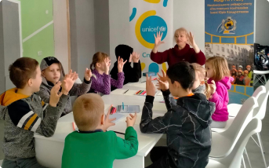

Хто ми
-

ГО «Всеукраїнська організація "Клас"» - неприбуткова організація, що створена 01 квітня 1998 року. Цільовою та пріоритетною групою організації завжди були і залишаються діти та молодь.
У перші роки діяльності - це були діти, з якими займалися з розвитку їх творчих здібностей і допомагали їм з творчою реалізацією (на сцені, в пісні, танці, в малюнку), в тому числі і в форматі ігрових програм для дітей, підлітків та молоді.
З 2005 року додатковим напрямком діяльності організації «КЛАС» стали захист та представництво інтересів дітей інвалідів та їх батьків, а також захист та представництво інтересів дітей сиріт та дітей, позбавлених батьківського піклування.
-
За час свого існування ГО «Всеукраїнська організація "Клас"» відкрила декілька важливих для суспільства установ, зокрема, центр реабілітації дітей-інвалідів в місті Алчевськ, центр правової допомоги дітям сиротам та дітям «Соціальним сиротам» та молодіжний центр «Вільний простір». Організація реалізувала десятки успішних проєктів та провела безліч тренингів для педагогів, представників учбового самоуправління навчальних закладів, волонтерів та дітей, в першу чергу.
Сьогодні ми ще активніше працюємо, допомагаємо, розвиваємо та підтримуємо тих, хто цього потребує. Наша команда завжди рада бути корисною людям, які опинились у складних життєвих обставинах. Разом з вами ми виростимо гідне майбутнє покоління України!